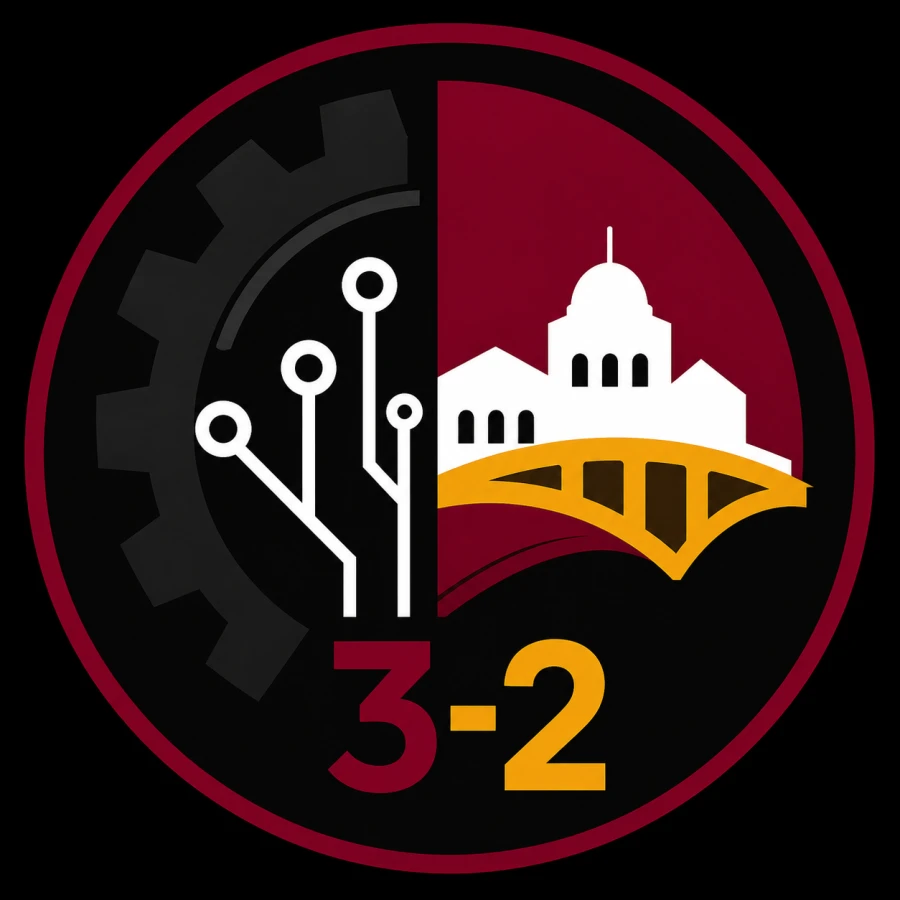
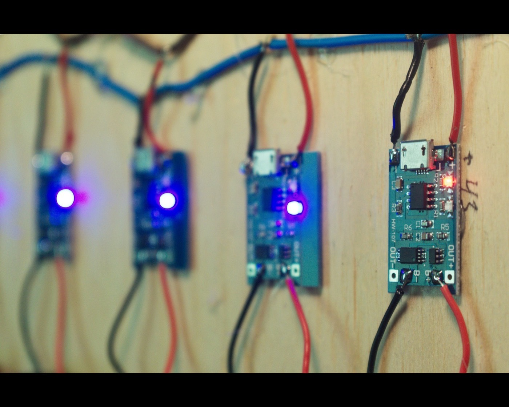

Complete the organizing group
Fill the Liaison and Secretary positions and identify an adviser.
Founding in 2026–27.
Join the societyThe group is forming so Oberlin students can find project teammates, compare 3-2 questions, and plan technical events.

Oberlin students interested in engineering come from different majors and class years. That can make potential collaborators difficult to find.
The society’s planned work includes student projects, 3-2 source links, and technical events.

Members will review proposals after the group forms. Each proposal should name a lead, semester-sized scope, workspace, tools, estimated cost, and safety requirements.
The first year will focus on a small number of tasks that the group can finish and document.
Members will:
Membership requires no prior technical experience and no commitment to the 3-2 program.
The group is recruiting members, filling open roles, checking 3-2 links, collecting project ideas, and scheduling its first event.
Fill the Liaison and Secretary positions and identify an adviser.
Collect student questions and review the linked Oberlin and partner-school pages.
Review proposals after the required people, workspace, tools, costs, and safety needs are known.
Publish the event only after its organizer, date, room, and access information are set.
Membership interest is open to current Oberlin students in any major or class year. Students do not need to be enrolled in the 3-2 program.
Kwaku proposed the society because he wanted a way for Oberlin students to work together on hardware and software projects.
Open officer positions are listed on the leadership page. Project and event roles will be posted after those plans are confirmed.
Submit membership interest